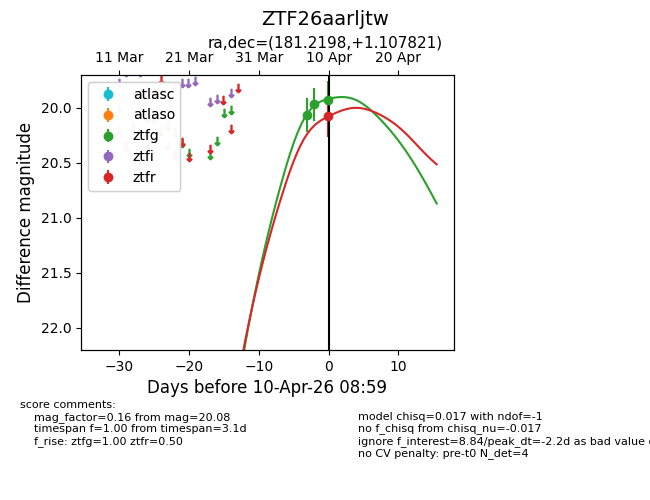
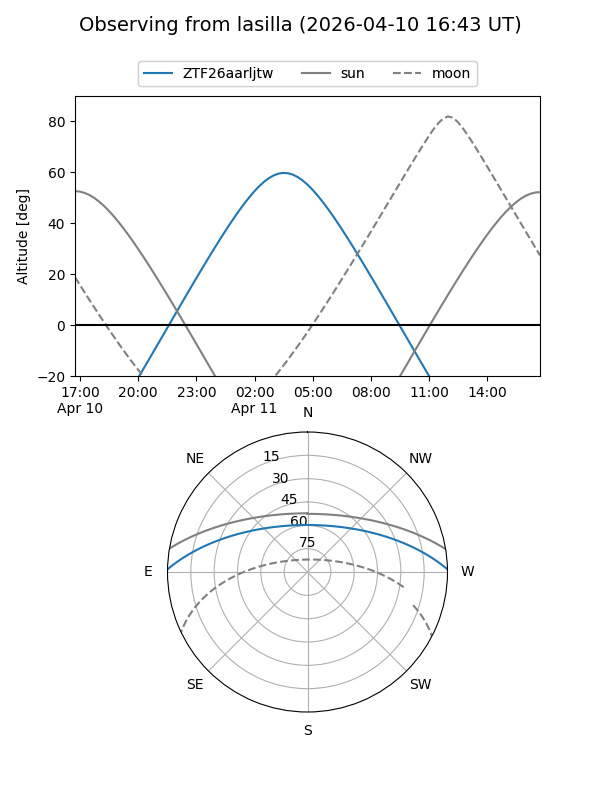
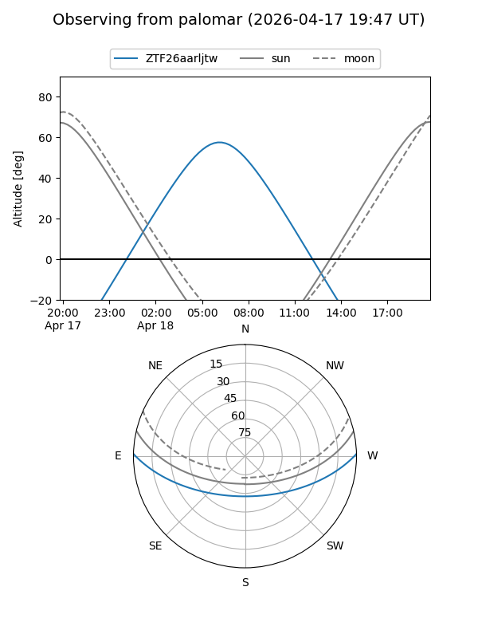
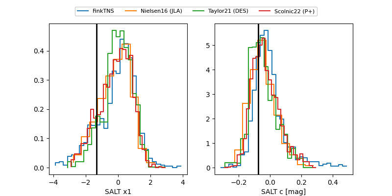

ZTF26aarljtw
Target ZTF26aarljtw at 2026-04-10 09:06
Aliases and brokers:
FINK: link
Lasair: link
ALeRCE: link
alt names
ZTF26aarljtw (ztf,fink_ztf)
Coordinates:
equatorial (ra, dec) = 181.2198,+1.10782
equatorial (HMS+DMS) = 12:04:52.75,+01:06:28.16
galactic (l, b) = (277.7650,+61.68330)
Flags:
Photometry:
last ztfg=19.93, ztfr=20.08
3 ztfg, 1 ztfr detections
Lightcurve

Visibility


Additional plots
